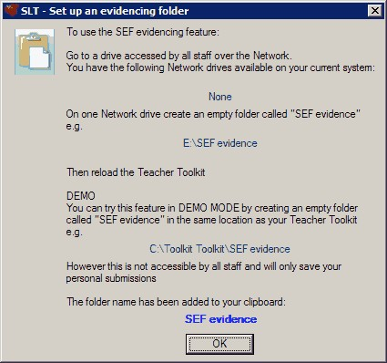
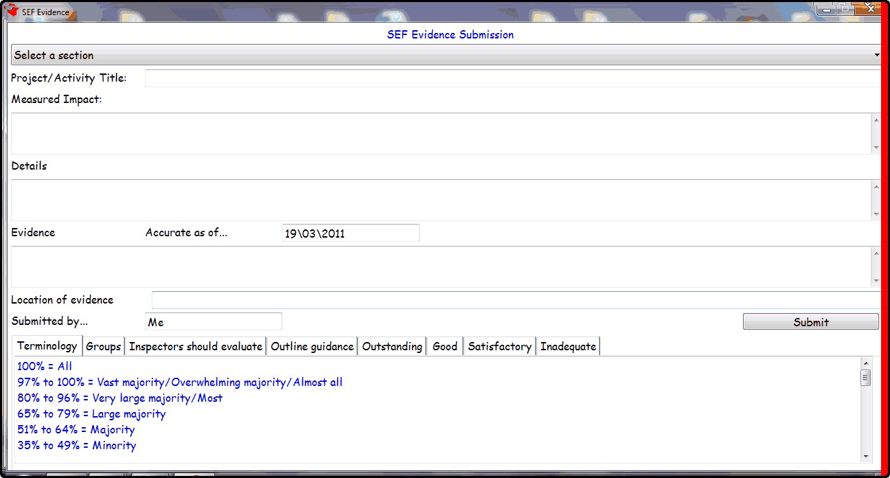
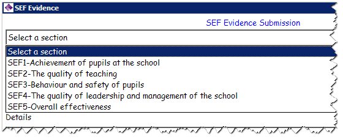
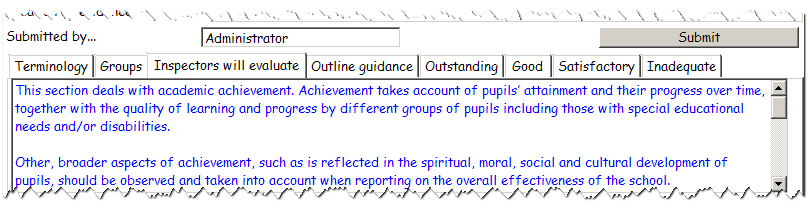
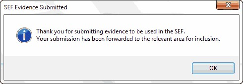
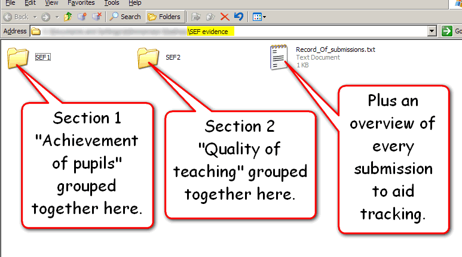

SEF Evidence
An effective school should undertake a full SELF EVALUATION that involves everyone within the school.
To make the process of SELF EVALUATION transparent, you can turn on the SEF SUBMISSION FEATURE:

All you need to do is create a folder on a NETWORKED DRIVE called SEF Evidence
When you select to submit SEF evidence, you are presented with a form to complete:

Here you can select a section (if you know where it belongs) or just submit general evidence:

For each section, the Teacher Toolkit will present the relevant information from Ofsted's Evaluation Schedule:

This includes:
•Correct terminology
•Ofsted groups
•What inspectors will evaluate
•What inspectors should take into account
•The features of: outstanding/good/satisfactory and inadequate practice.
when evidence is submitted:

It is stored in the SEF Evidence folder on the network:

An overview file is created so you can quickly see what evidence has been submitted and by whom.
It also stores each item of evidence into the relevant sections, allowing leaders responsible for each section to quickly gain access to the submissions from all staff.